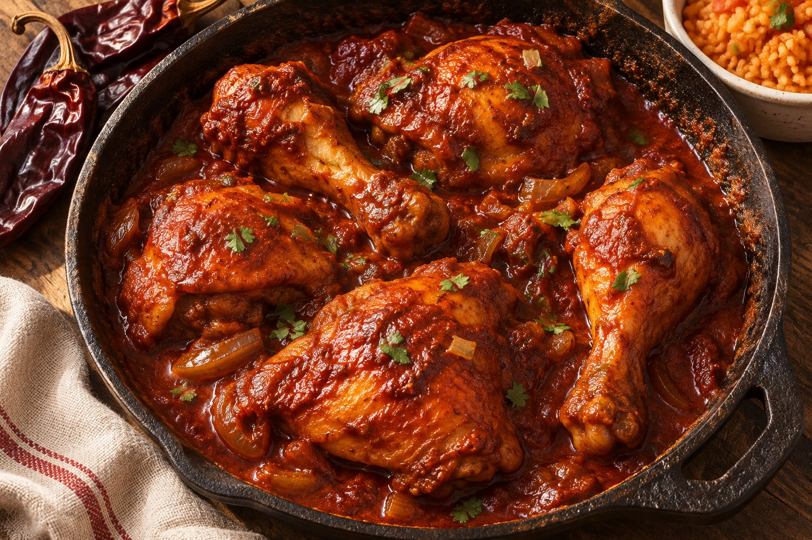

The family cookbook
From Cuca’s
cocina.
Homemade Mexican-American recipes, made with love and passed around the family table.

La caja de recetas
The recipe box

Juntos en la cocina
The family table
Give each cook a place in the book. Their name goes on every recipe they contribute, and each profile keeps its own favorites.
Family cooks
Cookbook backup
Your recipes, cook profiles, and family tree are saved in this browser. A backup carries them to another device.
El árbol familiar
Family tree
See how the cooks in your recipe book are connected. Choose where each person belongs as you add them.
Scroll sideways to see the whole family tree.